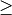

Support Vector Machines
Originally, support vector machines (SVM) was a technique for building an optimal binary (2-class) classifier. Later the technique was extended to regression and clustering problems. SVM is a partial case of kernel-based methods. It maps feature vectors into a higher-dimensional space using a kernel function and builds an optimal linear discriminating function in this space or an optimal hyper-plane that fits into the training data. In case of SVM, the kernel is not defined explicitly. Instead, a distance between any 2 points in the hyper-space needs to be defined.
The solution is optimal, which means that the margin between the separating hyper-plane and the nearest feature vectors from both classes (in case of 2-class classifier) is maximal. The feature vectors that are the closest to the hyper-plane are called support vectors, which means that the position of other vectors does not affect the hyper-plane (the decision function).
SVM implementation in OpenCV is based on [LibSVM].
ParamGrid
-
class ParamGrid
The structure represents the logarithmic grid range of statmodel parameters. It is used for optimizing statmodel accuracy by varying model parameters, the accuracy estimate being computed by cross-validation.
-
double ParamGrid::minVal
Minimum value of the statmodel parameter.
-
double ParamGrid::maxVal
Maximum value of the statmodel parameter.
-
double ParamGrid::logStep
Logarithmic step for iterating the statmodel parameter.
The grid determines the following iteration sequence of the statmodel parameter values:
where  is the maximal index satisfying
is the maximal index satisfying
The grid is logarithmic, so logStep must always be greater then 1.
ParamGrid::ParamGrid
The constructors.
-
C++: ParamGrid::ParamGrid()
-
C++: ParamGrid::ParamGrid(double minVal, double maxVal, double logStep)
The full constructor initializes corresponding members. The default constructor creates a dummy grid:
ParamGrid::ParamGrid()
{
minVal = maxVal = 0;
logStep = 1;
}
SVM::Params
-
class SVM::Params
SVM training parameters.
The structure must be initialized and passed to the training method of SVM.
SVM::Params::Params
The constructors
-
C++: SVM::Params::Params()
-
C++: SVM::Params::Params(int svmType, int kernelType, double degree, double gamma, double coef0, double Cvalue, double nu, double p, const Mat& classWeights, TermCriteria termCrit)
| Parameters: |
- svmType –
Type of a SVM formulation. Possible values are:
- SVM::C_SVC C-Support Vector Classification. n-class classification (n  2), allows imperfect separation of classes with penalty multiplier C for outliers.
- SVM::NU_SVC -Support Vector Classification. n-class classification with possible imperfect separation. Parameter (in the range 0..1, the larger the value, the smoother the decision boundary) is used instead of C.
- SVM::ONE_CLASS Distribution Estimation (One-class SVM). All the training data are from the same class, SVM builds a boundary that separates the class from the rest of the feature space.
- SVM::EPS_SVR -Support Vector Regression. The distance between feature vectors from the training set and the fitting hyper-plane must be less than p. For outliers the penalty multiplier C is used.
- SVM::NU_SVR -Support Vector Regression. is used instead of p.
See [LibSVM] for details.
- kernelType –
Type of a SVM kernel. Possible values are:
- SVM::LINEAR Linear kernel. No mapping is done, linear discrimination (or regression) is done in the original feature space. It is the fastest option. .
- SVM::POLY Polynomial kernel: .
- SVM::RBF Radial basis function (RBF), a good choice in most cases.
 . .
- SVM::SIGMOID Sigmoid kernel: .
- SVM::CHI2 Exponential Chi2 kernel, similar to the RBF kernel: .
- SVM::INTER Histogram intersection kernel. A fast kernel. .
- degree – Parameter degree of a kernel function (POLY).
- gamma – Parameter of a kernel function (POLY / RBF / SIGMOID / CHI2).
- coef0 – Parameter coef0 of a kernel function (POLY / SIGMOID).
- Cvalue – Parameter C of a SVM optimization problem (C_SVC / EPS_SVR / NU_SVR).
- nu – Parameter of a SVM optimization problem (NU_SVC / ONE_CLASS / NU_SVR).
- p – Parameter of a SVM optimization problem (EPS_SVR).
- classWeights – Optional weights in the C_SVC problem , assigned to particular classes. They are multiplied by C so the parameter C of class #i becomes classWeights(i) * C. Thus these weights affect the misclassification penalty for different classes. The larger weight, the larger penalty on misclassification of data from the corresponding class.
- termCrit – Termination criteria of the iterative SVM training procedure which solves a partial case of constrained quadratic optimization problem. You can specify tolerance and/or the maximum number of iterations.
|
|---|
The default constructor initialize the structure with following values:
SVMParams::SVMParams() :
svmType(SVM::C_SVC), kernelType(SVM::RBF), degree(0),
gamma(1), coef0(0), C(1), nu(0), p(0), classWeights(0)
{
termCrit = TermCriteria( TermCriteria::MAX_ITER+TermCriteria::EPS, 1000, FLT_EPSILON );
}
A comparison of different kernels on the following 2D test case with four classes. Four C_SVC SVMs have been trained (one against rest) with auto_train. Evaluation on three different kernels (CHI2, INTER, RBF). The color depicts the class with max score. Bright means max-score > 0, dark means max-score < 0.

SVM
-
class SVM : public StatModel
Support Vector Machines.
Note
- (Python) An example of digit recognition using SVM can be found at opencv_source/samples/python2/digits.py
- (Python) An example of grid search digit recognition using SVM can be found at opencv_source/samples/python2/digits_adjust.py
- (Python) An example of video digit recognition using SVM can be found at opencv_source/samples/python2/digits_video.py
SVM::create
Creates empty model
-
C++: Ptr<SVM> SVM::create(const Params& p=Params(), const Ptr<Kernel>& customKernel=Ptr<Kernel>())
| Parameters: |
- p – SVM parameters
- customKernel – the optional custom kernel to use. It must implement SVM::Kernel interface.
|
|---|
Use StatModel::train to train the model, StatModel::train<RTrees>(traindata, params) to create and train the model, StatModel::load<RTrees>(filename) to load the pre-trained model. Since SVM has several parameters, you may want to find the best parameters for your problem. It can be done with SVM::trainAuto.
SVM::trainAuto
Trains an SVM with optimal parameters.
-
C++: bool SVM::trainAuto(const Ptr<TrainData>& data, int kFold=10, ParamGrid Cgrid=SVM::getDefaultGrid(SVM::C), ParamGrid gammaGrid=SVM::getDefaultGrid(SVM::GAMMA), ParamGrid pGrid=SVM::getDefaultGrid(SVM::P), ParamGrid nuGrid=SVM::getDefaultGrid(SVM::NU), ParamGrid coeffGrid=SVM::getDefaultGrid(SVM::COEF), ParamGrid degreeGrid=SVM::getDefaultGrid(SVM::DEGREE), bool balanced=false)
| Parameters: |
- data – the training data that can be constructed using TrainData::create or TrainData::loadFromCSV.
- kFold – Cross-validation parameter. The training set is divided into kFold subsets. One subset is used to test the model, the others form the train set. So, the SVM algorithm is executed kFold times.
- *Grid – Iteration grid for the corresponding SVM parameter.
- balanced – If true and the problem is 2-class classification then the method creates more balanced cross-validation subsets that is proportions between classes in subsets are close to such proportion in the whole train dataset.
|
|---|
The method trains the SVM model automatically by choosing the optimal
parameters C, gamma, p, nu, coef0, degree from
SVM::Params. Parameters are considered optimal
when the cross-validation estimate of the test set error
is minimal.
If there is no need to optimize a parameter, the corresponding grid step should be set to any value less than or equal to 1. For example, to avoid optimization in gamma, set gammaGrid.step = 0, gammaGrid.minVal, gamma_grid.maxVal as arbitrary numbers. In this case, the value params.gamma is taken for gamma.
And, finally, if the optimization in a parameter is required but
the corresponding grid is unknown, you may call the function SVM::getDefaulltGrid(). To generate a grid, for example, for gamma, call SVM::getDefaulltGrid(SVM::GAMMA).
This function works for the classification
(params.svmType=SVM::C_SVC or params.svmType=SVM::NU_SVC)
as well as for the regression
(params.svmType=SVM::EPS_SVR or params.svmType=SVM::NU_SVR). If params.svmType=SVM::ONE_CLASS, no optimization is made and the usual SVM with parameters specified in params is executed.
SVM::getDefaulltGrid
Generates a grid for SVM parameters.
-
C++: ParamGrid SVM::getDefaulltGrid(int param_id)
-
The function generates a grid for the specified parameter of the SVM algorithm. The grid may be passed to the function SVM::trainAuto().
SVM::getParams
Returns the current SVM parameters.
-
C++: SVM::Params SVM::getParams() const
This function may be used to get the optimal parameters obtained while automatically training SVM::trainAuto.
SVM::getSupportVectors
Retrieves all the support vectors
-
C++: Mat SVM::getSupportVectors() const
The method returns all the support vector as floating-point matrix, where support vectors are stored as matrix rows.
SVM::getDecisionFunction
Retrieves the decision function
-
C++: double SVM::getDecisionFunction(int i, OutputArray alpha, OutputArray svidx) const
| Parameters: |
- i – the index of the decision function. If the problem solved is regression, 1-class or 2-class classification, then there will be just one decision function and the index should always be 0. Otherwise, in the case of N-class classification, there will be N*(N-1)/2 decision functions.
- alpha – the optional output vector for weights, corresponding to different support vectors. In the case of linear SVM all the alpha’s will be 1’s.
- svidx – the optional output vector of indices of support vectors within the matrix of support vectors (which can be retrieved by SVM::getSupportVectors). In the case of linear SVM each decision function consists of a single “compressed” support vector.
|
|---|
The method returns rho parameter of the decision function, a scalar subtracted from the weighted sum of kernel responses.
Prediction with SVM
StatModel::predict(samples, results, flags) should be used. Pass flags=StatModel::RAW_OUTPUT to get the raw response from SVM (in the case of regression, 1-class or 2-class classification problem).